| total_healpix | of which non_zero_count | of which count_gt_10 | of which prop_non_point_lt_05 | of which r2_above_075 |
|---|---|---|---|---|
| 18774019 | 1112629 | 812130 | 769610 | 699514 |
Debiasing Meteoroid Flux Estimates Using the Desert Fireball Network’s Clear-Sky Survey
Hadrien Devillepoix ![]()
Eleanor Sansom
Thomas Stevenson
The Problem
- Accurate meteoroid flux measurements require:
- Detection of meteors
- Precise measurement of time-area product (Halliday, Griffin, and Blackwell 1996)
- Desert Fireball Network (DFN):
- 30+ cameras across Australia (H. A. R. Devillepoix et al. 2019)
- Operates since 2015 (Howie et al. 2017)
- Millions of images (300TB compressed from 3PB)
- Varying viewing conditions affecting observations

Why It Matters
- Accurate flux estimates crucial for:
- Space mission planning (P. Brown et al. 2002)
- Spacecraft protection (Moorhead 2023)
- Understanding meteoroid populations (Bottke 2002)
- Risk assessment (e.g., JWST impact) (P. G. Brown et al. 2013)
- Current methods are labor-intensive and not comparable across observers
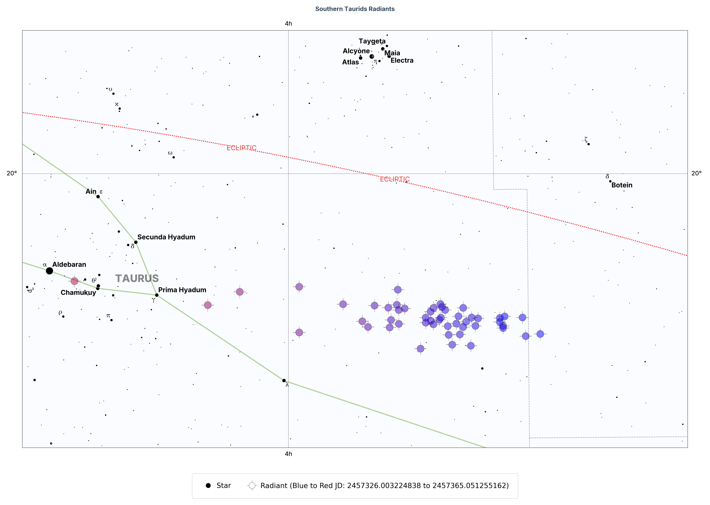
Our Solution: HEALPix-Based Survey
- HEALPix: Hierarchical Equal Area isoLatitude Pixelization (Górski et al. 2005)
- Advantages:
- Equal-area pixels (10,606 km² each for this study, using NSIDE=64)
- Easy aggregation across cameras
- Simplified time-area calculations
- Standard framework in astronomy
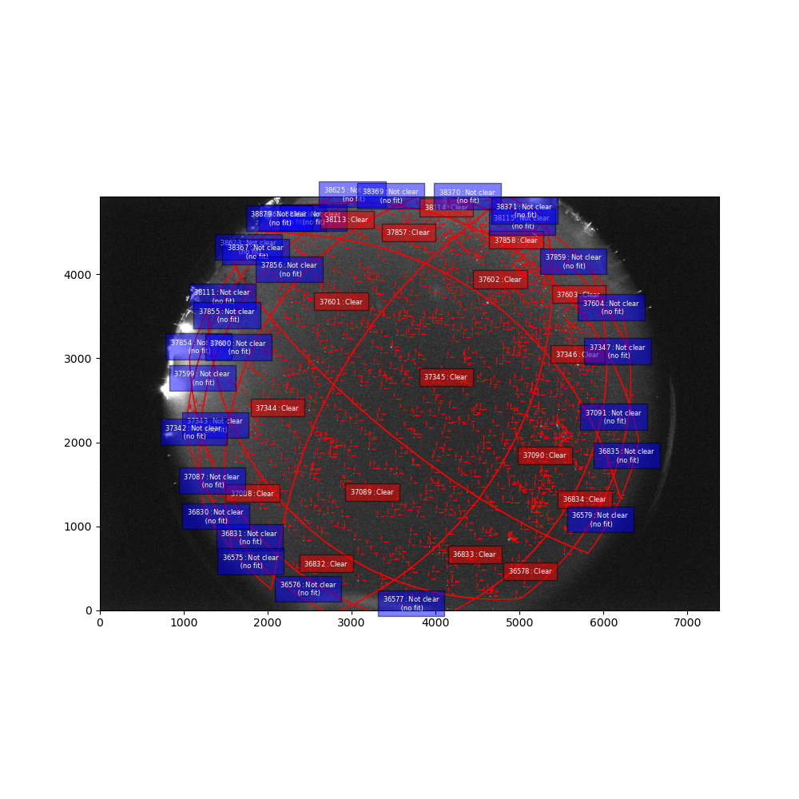
Interactive HEALPix Visualization
Pipeline Overview
- L0: Raw images → Object store (Howie et al. 2017)
- L1: Extract star sources and fluxes
- L2: Map to 70km altitude HEALPix grid (Halliday, Griffin, and Blackwell 1996)
- Classification: Clear vs. cloudy using flux distribution (\(R^2 > 0.75\))
- Aggregation: Combine across cameras and time
Clear Sky Determination
- For each HEALPix cell in each image:
- Sort sources by measured flux
- Fit logarithmic function to flux distribution
- If \(R^2 > 0.75\) and sources ≥ 10, mark as “clear”
- Based on astronomical source distribution patterns (Seares et al. 1925)
- Other sources (e.g., clouds, moon, saturated pixels) break this pattern so they are rejected.
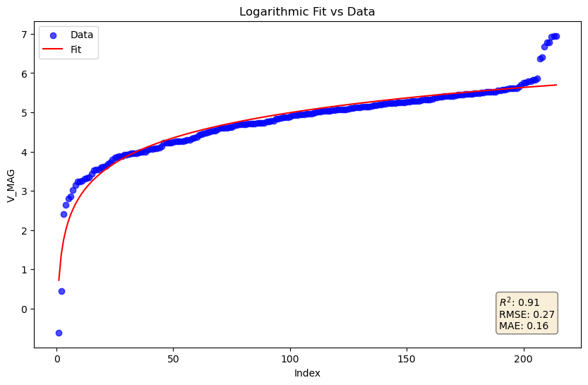
Clear Sky Determination (Exmple not fitting)
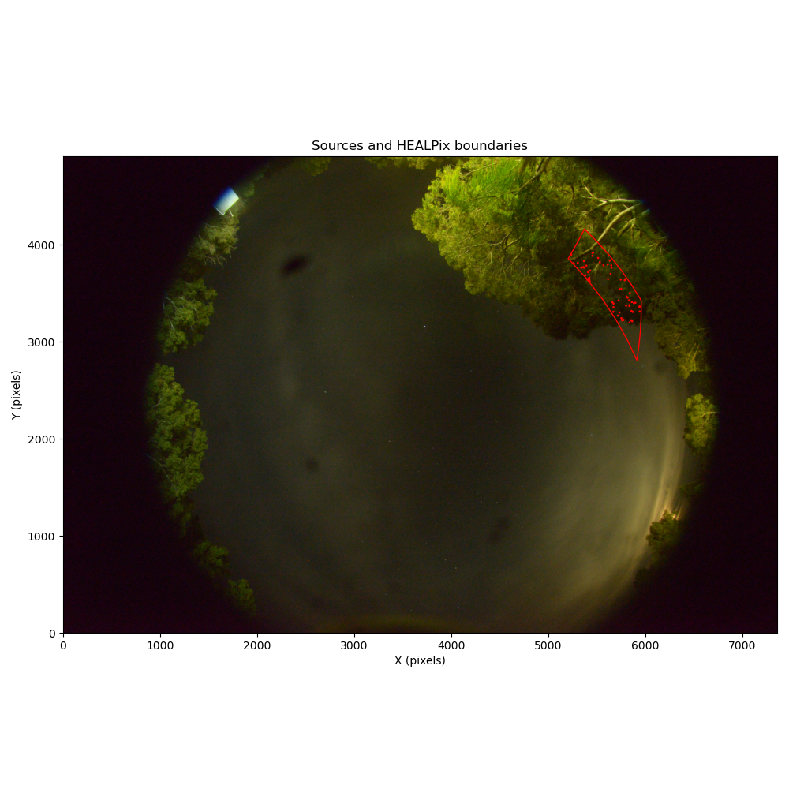
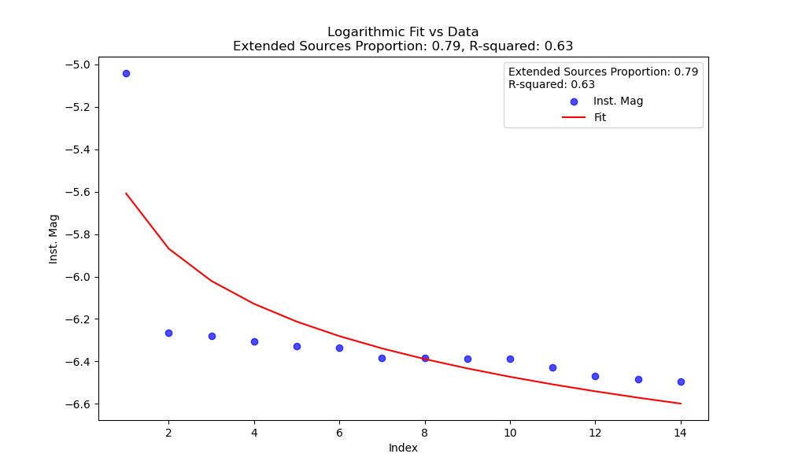
HEALPix Summary Table
Multi-Camera Coverage
- Aggregate clear HEALPix cells by timestamp
- Record which cameras observed each cell (H. A. R. Devillepoix et al. 2020)
- Requirements for valid observation:
- ≥ 30 images per 15-min window
- ≥ 2 cameras viewing same HEALPix
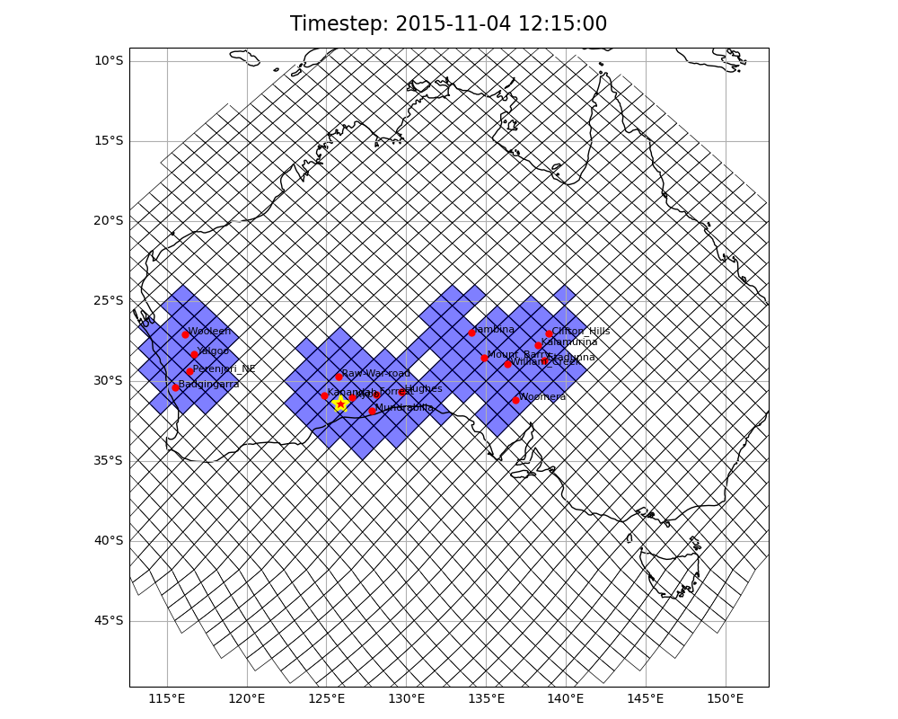
Network Coverage Results
- Study period: Oct-Dec 2015 (Southern Taurids) (Hadrien A. R. Devillepoix et al. 2021)
- Average cameras operating: ~15
- Each HEALPix observed multiple times
- Total effective survey area: millions of km²·hours
- First systematic area-time estimate for DFN
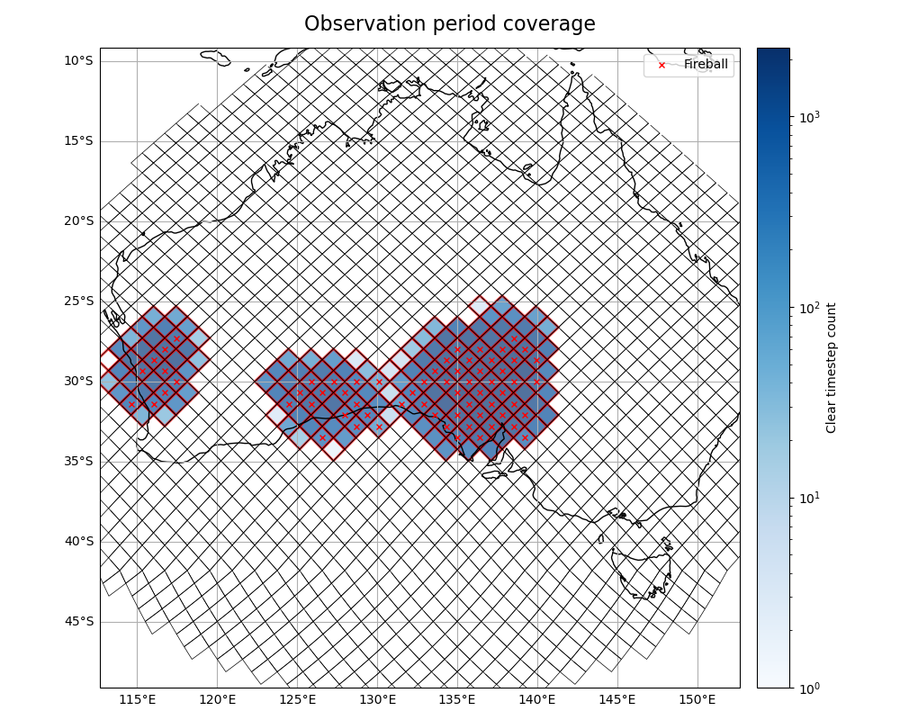
Fireball Selection & Filtering
- Two-step filtering:
- Camera must be “observing” (30+ images/15min)
- Fireball must pass through clear HEALPix cell
- Additional filter: 70km altitude intersection (Halliday, Griffin, and Blackwell 1996)
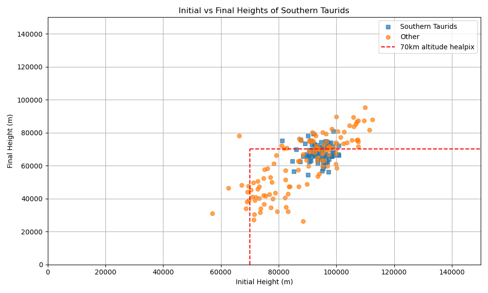
Southern Taurids Results
- Period: Oct 27 - Nov 17, 2015 (Spurný et al. 2017)
- Detected fireballs after filtering: ~80
- Mass range: ~0.1g to ~10kg
- Dynamic mass calculation (Gritsevich and Popelenskaya 2008; Sansom et al. 2015)
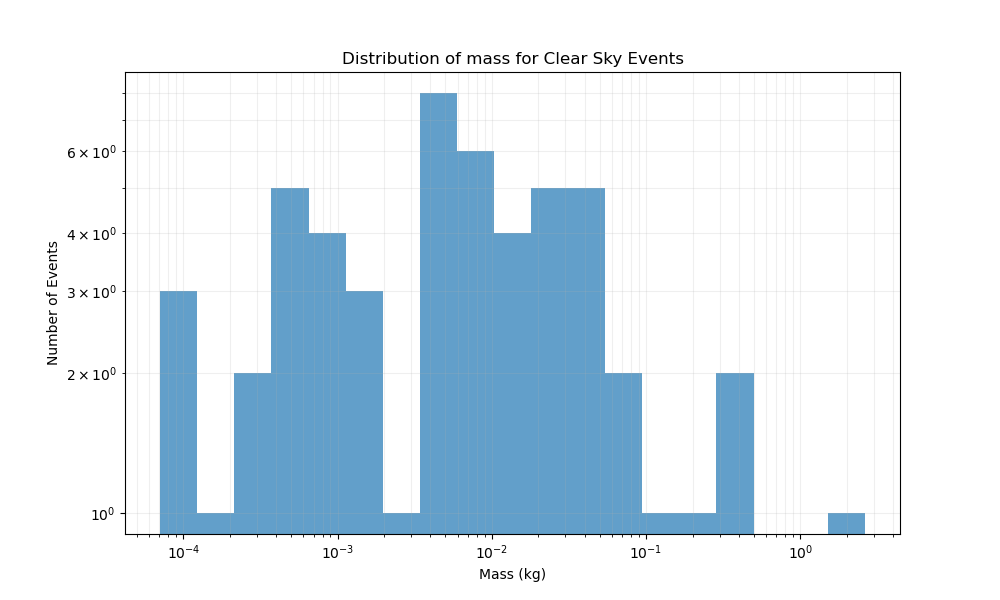
Size-Frequency Distribution
- Fit with break at ~1g (Halliday, Griffin, and Blackwell 1996)
- Mass indices:
- s = ~2.1 below break
- s = ~1.7 above break
- Break consistent with previous studies (P. Brown et al. 2002) but in our case it there is also selection bias
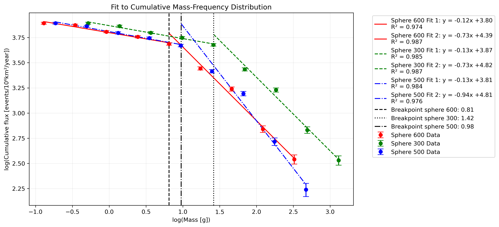
Comparison with Other Surveys
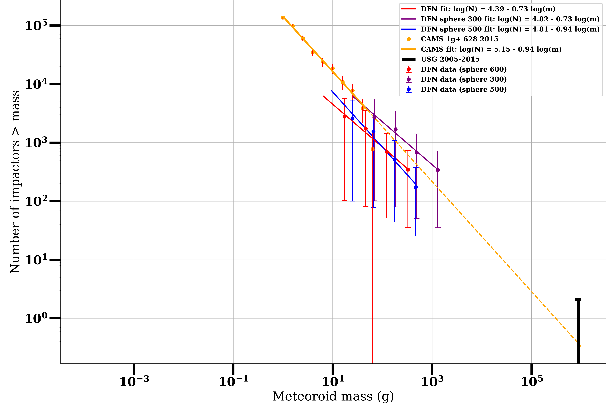270 kg/m³ is estimated by (Ceplecha 1988) for cometary origin
Benefits & Future Work
- Benefits:
- Automated processing of millions of images
- Accurate time-area product calculation (Bland and Artemieva 2006)
- Standardized, equal-area framework (Górski et al. 2005)
- Applicable to other meteor networks
- Future Work:
- Release as Python library
- Add apex-centered HEALPix for stream correction
- Combine dynamic and photometric mass methods
- Extend to full DFN dataset (2015-present)
Conclusions
- HEALPix provides robust framework for meteor network debiasing (Górski et al. 2005)
- Automated clear-sky detection enables processing of vast datasets
- Method extends to multiple cameras with varying conditions (H. A. R. Devillepoix et al. 2020)
- Results complement existing surveys and extend to larger masses
- Framework applicable to other meteor observation networks
Thank You!
Contact
Konstantinos Servis
knservis@gmail.com
ORCID: 0000-0002-3596-100X
Acknowledgments
- Pawsey Supercomputing Centre
- Desert Fireball Network Team
References
Bland, Philip A., and Natalya A. Artemieva. 2006. “The Rate of Small Impacts on Earth.” Meteoritics & Planetary Science 41 (4): 607–31. https://doi.org/10.1111/j.1945-5100.2006.tb00485.x.
Bottke, W. 2002. “Debiased Orbital and Absolute Magnitude Distribution of the Near-Earth Objects.” Icarus 156 (2): 399–433. https://doi.org/10.1006/icar.2001.6788.
Brown, P. G., J. D. Assink, L. Astiz, R. Blaauw, M. B. Boslough, J. Borovička, N. Brachet, et al. 2013. “A 500-Kiloton Airburst over Chelyabinsk and an Enhanced Hazard from Small Impactors.” Nature 503 (November): 238–41. https://doi.org/10.1038/nature12741.
Brown, P., R. E. Spalding, D. O. ReVelle, E. Tagliaferri, and S. P. Worden. 2002. “The Flux of Small Near-Earth Objects Colliding with the Earth.” Nature 420 (6913): 294–96. https://doi.org/10.1038/nature01238.
Ceplecha, Zdenek. 1988. “Earth’s Influx of Different Populations of Sporadic Meteoroids from Photographic and Television Data.” Bulletin of the Astronomical Institutes of Czechoslovakia 39 (July): 221. https://ui.adsabs.harvard.edu/abs/1988BAICz..39..221C.
Devillepoix, H A R, P A Bland, E K Sansom, M C Towner, M Cupák, R M Howie, B A D Hartig, T Jansen-Sturgeon, and M A Cox. 2019. “Observation of Metre-Scale Impactors by the Desert Fireball Network.” Monthly Notices of the Royal Astronomical Society 483 (4): 5166–78. https://doi.org/10.1093/mnras/sty3442.
Devillepoix, H. A. R., M. Cupák, P. A. Bland, E. K. Sansom, M. C. Towner, R. M. Howie, B. A. D. Hartig, et al. 2020. “A Global Fireball Observatory.” Planetary and Space Science 191 (October): 105036. https://doi.org/10.1016/j.pss.2020.105036.
Devillepoix, Hadrien A. R., Peter Jenniskens, Philip A. Bland, Eleanor K. Sansom, Martin C. Towner, Patrick Shober, Martin Cupák, et al. 2021. “Taurid Stream #628: A Reservoir of Large Cometary Impactors.” The Planetary Science Journal 2 (6): 223. https://doi.org/10.3847/PSJ/ac2250.
Górski, K. M., E. Hivon, A. J. Banday, B. D. Wandelt, F. K. Hansen, M. Reinecke, and M. Bartelmann. 2005. “HEALPix: A Framework for High-Resolution Discretization and Fast Analysis of Data Distributed on the Sphere.” The Astrophysical Journal 622 (2): 759. https://doi.org/10.1086/427976.
Gritsevich, M. I., and N. V. Popelenskaya. 2008. “Meteor and Fireball Trajectories for High Values of the Mass Loss Parameter.” Doklady Physics 53 (2): 88–92. https://doi.org/10.1134/S1028335808020092.
Halliday, Ian, Arthur A. Griffin, and Alan T. Blackwell. 1996. “Detailed Data for 259 Fireballs from the Canadian Camera Network and Inferences Concerning the Influx of Large Meteoroids.” Meteoritics & Planetary Science 31 (2): 185–217. https://doi.org/10.1111/j.1945-5100.1996.tb02014.x.
Howie, Robert M., Jonathan Paxman, Philip A. Bland, Martin C. Towner, Martin Cupak, Eleanor K. Sansom, and Hadrien A. R. Devillepoix. 2017. “How to Build a Continental Scale Fireball Camera Network.” Experimental Astronomy 43 (3): 237–66. https://doi.org/10.1007/s10686-017-9532-7.
Moorhead, Althea V. 2023. “A Library of Meteoroid Environments Encountered by Spacecraft in the Inner Solar System.” https://doi.org/10.1016/j.asr.2023.08.016.
Sansom, Eleanor Kate, Philip Bland, Jonathan Paxman, and Martin Towner. 2015. “A Novel Approach to Fireball Modeling: The Observable and the Calculated.” Meteoritics and Planetary Science 50 (August): 1423–35. https://doi.org/10.1111/maps.12478.
Seares, Frederick H., P. J. van Rhijn, Mary C. Joyner, and Myrtle L. Richmond. 1925. “Mean Distribution of Stars According to Apparent Magnitude and Galactic Latitude.” The Astrophysical Journal 62 (December): 320. https://doi.org/10.1086/142940.
Spurný, P., J. Borovička, H. Mucke, and J. Svoreň. 2017. “Discovery of a New Branch of the Taurid Meteoroid Stream as a Real Source of Potentially Hazardous Bodies.” Astronomy & Astrophysics 605 (September): A68. https://doi.org/10.1051/0004-6361/201730787.
Meteoroids 2025